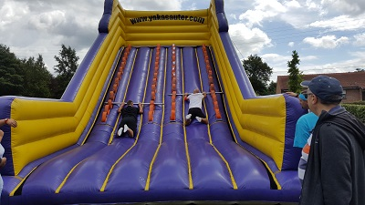
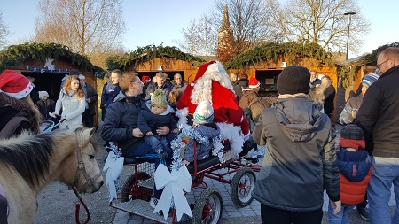

Nos manifestations
Le Comité des fêtes organise chaque année plusieurs évènements :
- La ducasse
- La brocante
- Le 14 juillet
- La soirée Beaujolais
- Le marché de Noêl
- Le Parcours du Coeur
La ducasse

Chaque année, le 1er dimanche de mai, a lieu la ducasse de Beaufort.
La municipalité prévoit des forains : manège enfantin, tir à la carabine, confiserie,
pêche au canard, auto tamponantes.
A ces activités le Comité des fêtes ajoute d'autres manisfestations, parfois les gilles,
parfois un corso de char, ou dernièrement une épreuve de vélo / course à pied pour
laquelle des équipes compoées d'un parent et d'un enfant s'affrontent dans les rues
du village.
Le Forbo (la mascotte) est sorti si le temps le permet.
Il est alors tiré par un tracteur à travers le village.
La journée s'achève avec une soirée moules frites et dansante.
La brocante
Elle a lieu dans plusieurs rues du village le 8 mai. Elle acceuille aussi bien les riverains que des exposants extèrieurs sous réservation.
Le 14 juillet

Chaque 14 juillet le Comité organise des olympiades intra village durant lesquelles des
équipes composées d'hommes, de femmes et enfants s'affrondent lors d'épreuves physiques.
Différentes épreuves varient chaque année, la course en sac, la balayette infernale,
les échasses mais une épreuve reste incontournable celle du garçon de café.
Chaque membre de l'équipe effectue un parcours du combattant en portant un plateau
avec 3 gobelets remplis d'eau. Il faut arriver avec un maximum d'eau.
Le soir le Comité ouvre sa baraque à frites et tient le bar de la soirée dansante.
La soirée Beaujolais
En novembre un moment de convivialité est organisé autour d'une bouteille de Beaujolais et d'une assiette de charcuterie.
Le Marché de Noël
Il est organisé le 1er dimanche de décembre.
Un emplacement est offert aux associations du village qui le souhaitent et payant
pour les exposants extèrieurs.
Cette année il était composé de 13 chalets sur le devant de la salle socio Culturelle
et 7 exposants avaient pris places sont également disponibles à l'intérieur de celle_ci.
Merci aux associations et exposant de participer chaque année.
Cette année le
feu d'artifice habituellement tiré lors de la fête nationale a attiré un grand nombre
de villageois.
Le Parcours du Coeur
Il est organisé en avril en lien avec la fédération Française de Cardiologie.
Il aura lieu cette année le 10 avril matin en partenariat avec l'association La Gym Beaufortoise.
Deux parcours sont organisés au travers du village; le premier de 5 km, accessible aux poussettes et le second de 10km. Une collation est offerte à la fin.